A simple tool to interrupt the constant stream of thoughts. The shape of the Chartres labyrinth adds a quiet sense of wonder. It is traditionally seen as a path through life, but you don’t need to hold onto any meaning. Just follow the ball and notice what you feel.
It can come in handy whenever your mind needs a real break, not just another dose of a different kind of information. You can enhance the effect further by choosing different background and ball colours, and especially by adjusting the speed of the animation and how long the ball stays in the centre. Different settings suit different people and moments.
You can download your own version for 2€. It works offline, without ads or accounts, and lets you adjust the colours, speed and centre pause as you like. Best experience on Android. Other platforms are not fully tested yet.
Get your own labyrinthQuestions or thoughts?